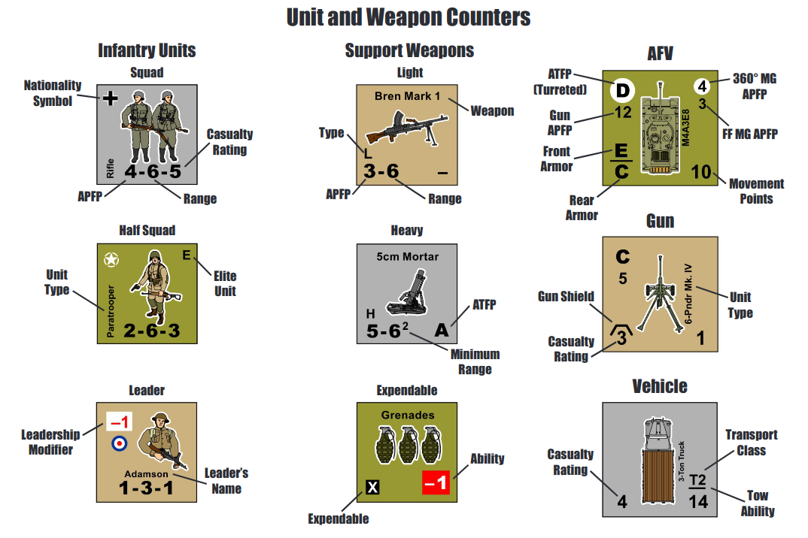
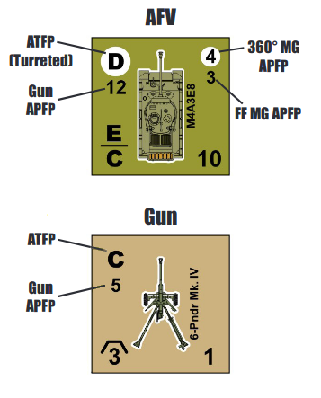

1. Counters and Markers¶

1.1 Unit and Weapon Counters¶
Counters are used to represent the combat units and weapons. Each counter represents one squad, one half squad, one leader (or hero), one support weapon, one armored fighting vehicle (AFV), one unarmored vehicle, or one artillery or anti-tank Gun. An infantry unit with an E in the upper right corner of the counter is an elite unit.
1.11 Squad¶
The squad is the base infantry fighting unit in WWII. A squad counter has two soldiers depicted on it, and represents 8 to 12 men.
1.12 Half Squad¶
A half squad counter has one soldier depicted on it, and represents 2 to 5 men.
1.13 Leader¶
A leader counter represents a single man. A leader counter has one soldier depicted on it, and a leadership modifier in the upper left corner of the counter. A leader counter will sometimes be used to represent a hero, but only when indicated by a scenario.
1.14 Support Weapon¶
There are three types of support weapons: Light (L), Heavy (H), and Expendable (X). A support weapon must be carried, and used, by an infantry unit (Exception: Expendable (X) support weapons are not placed with, or carried by, units).
1.15 Gun¶
A Gun represents an artillery, anti-tank, or anti-aircraft gun. A Gun counter has the depiction of the weapon on it, and the side of the counter the weapon is facing is the front of the unit. A Gun has an inherent crew, and does not need an infantry counter to operate. Large Guns have "0" Movement Points, and may only be moved when towed by a transport unit.
1.16 AFV¶
An AFV is a tank, self-propelled gun, halftrack, or armored car. An AFV counter has the depiction of the vehicle on it, and the side of the counter the vehicle is facing is the front of the unit. An AFV may be armed with a main Gun and multiple machine guns, as indicated on the counter. An AFV has an inherent crew, and does not need an infantry counter to operate.
1.17 Vehicle¶
A vehicle is a jeep, truck, or other type of unarmored transport unit. A vehicle counter has the depiction of the unit on it, and the side of the counter the vehicle is facing is the front of the unit. A vehicle may be armed with machine guns, and in rare instances with a Gun. A vehicle has an inherent crew, and does not need an infantry counter to operate.
1.2 Unit and Weapon Stats¶
A unit's stats are printed on its counter. If the counter has a dash (-) in place of a firepower rating or ability, or no rating or ability listed, it indicates the unit is not armed with that particular weapon, or possess that particular ability.
1.21 Anti-Personnel Firepower (APFP)¶

A unit's Anti-Personnel Firepower may be used when it fires on infantry units, unarmored vehicles, and Guns. APFP has no effect on AFVs (Exception: Close Assaults). A Gun's APFP is listed below its Anti-Tank Firepower. An AFV or vehicle may have up to two machine gun ratings.
An AFV or vehicle machine gun APFP rating with a white circle beneath it is a 360° machine gun (360° MG), and may be fired in any direction. A machine gun without the white circle beneath it is a forward firing machine gun (FF MG), and may only be fired at targets in the unit's Forward Firing Arc (FFA, see 7.4 Forward Firing Arc).
1.22 Anti-Tank Firepower (ATFP)¶
A unit's Anti-Tank Firepower may be used when it fires on AFVs, vehicles and Guns. An AFV with a white circle beneath its ATFP is turreted, and may fire its Gun (using either AT or AP fire) in any direction. An AFV without the white circle beneath its ATFP may only fire its Gun in its FFA.
1.23 Range¶
Range is the number of hexes the unit may fire using its APFP or ATFP ratings. A Gun has no range limit. All AFV and vehicle machine guns have a maximum range of eight hexes. Mortars are indirect fire weapons, and have a minimum range of two hexes (see 12.6 Mortars).
1.24 Casualty Rating¶
Infantry units, unarmored vehicles and Guns have a Casualty Rating. A unit's Casualty Rating is a measure of its survivability when fired on by APFP.
1.25 Armor Factor¶
AFVs only. The Armor Factor is used when the unit is attacked by ATFP. If the AFV has two Armor Factors, the upper factor is for front armor, and the lower factor is for rear armor. If only a single Armor Factor is listed it is used for both front and rear armor.
1.26 Gun Shield¶
Only Guns have a Gun Shield. A Gun Shield provides extra protection to the unit when attacked from within the unit's FFA.
1.27 Leadership Modifier¶
Leaders only. A leader's leadership modifier may be used to modify certain dice rolls.
1.28 Movement Points¶
AFVs and vehicles only. Movement Points determine how far a unit can move each turn.
1.29 Transport Class¶
Transport vehicles only. The Transport Class indicates the number and type of units the transport unit may carry.
1.3 Game Markers¶
Game markers are used to record game information during play. When a marker is used to indicate the status of a unit it is placed on top of the affected unit.